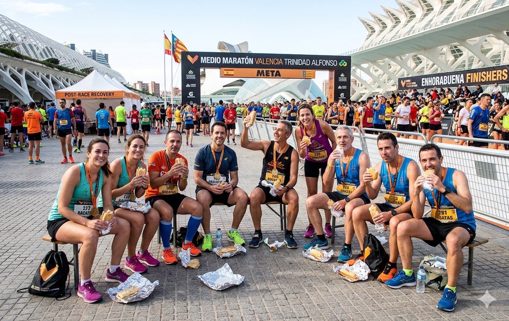

La ciudad del running nos recibió con los brazos abiertos y récords personales.
Valencia siempre es especial, pero vivirla con el club lo fue aún más. Salimos desde Sevilla en grupo el viernes por la tarde, entre nervios y risas. El sábado recogimos los dorsales en la feria del corredor y aprovechamos para hacer un rodaje suave de 15 minutos por el cauce del río Turia para soltar piernas.
El día de la carrera, el ambiente era eléctrico. Ver a todos los miembros de Run & Rise Club con sus camisetas oficiales calentando juntos fue uno de los momentos más emocionantes del año. Los 21 kilómetros volaron gracias al apoyo constante entre nosotros.
Al final, medallas en el cuello, muchas lágrimas de alegría y una comida de celebración que duró hasta el atardecer. ¡Valencia 2024 queda marcada a fuego en nuestra historia!
Galería del evento

